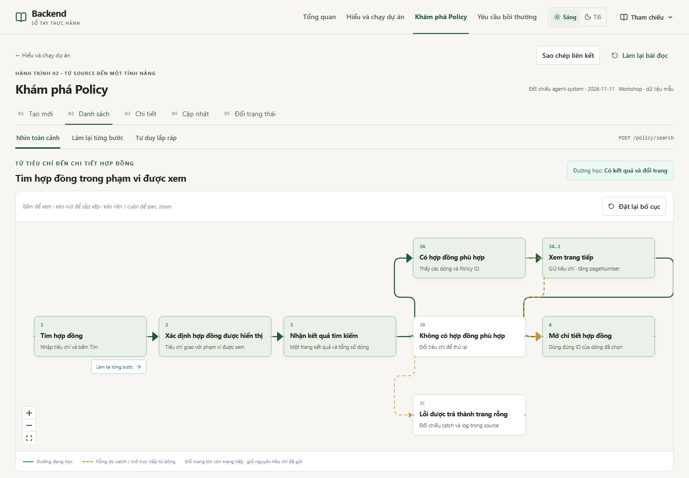
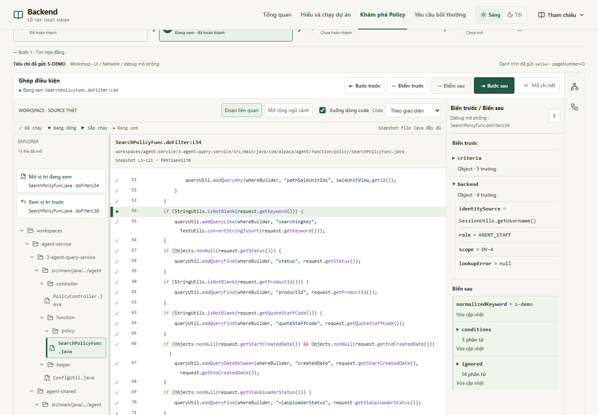
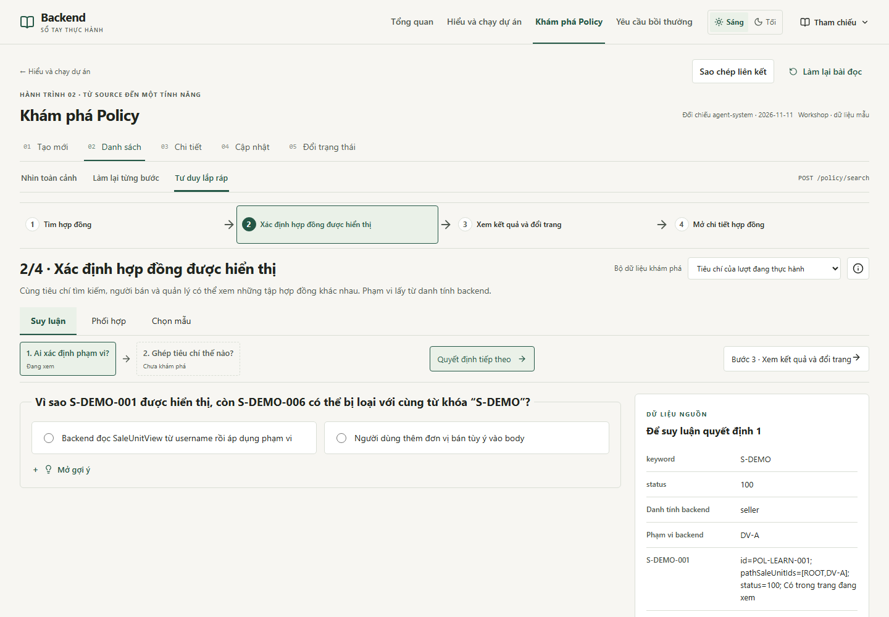
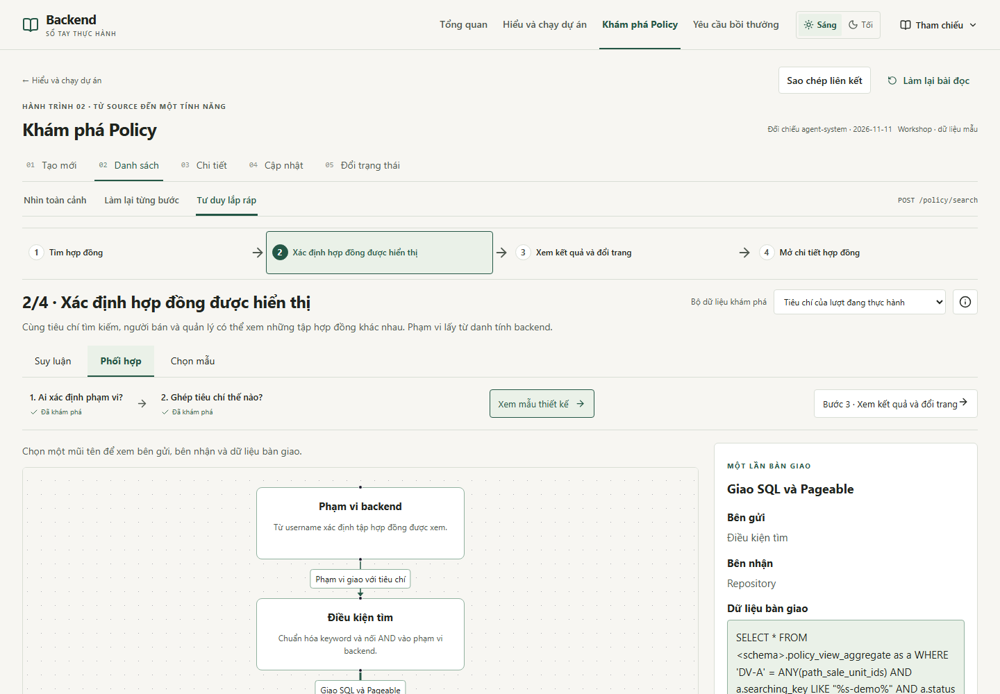
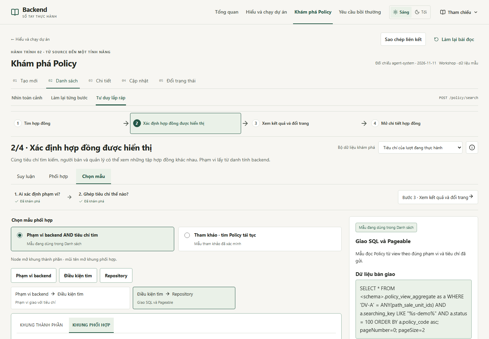
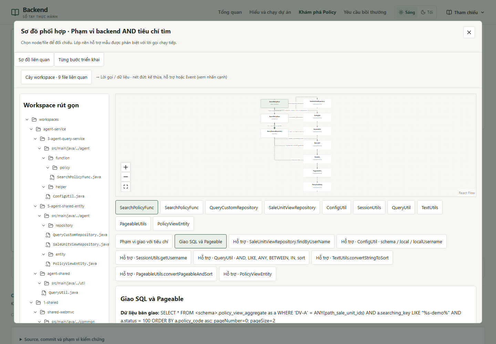
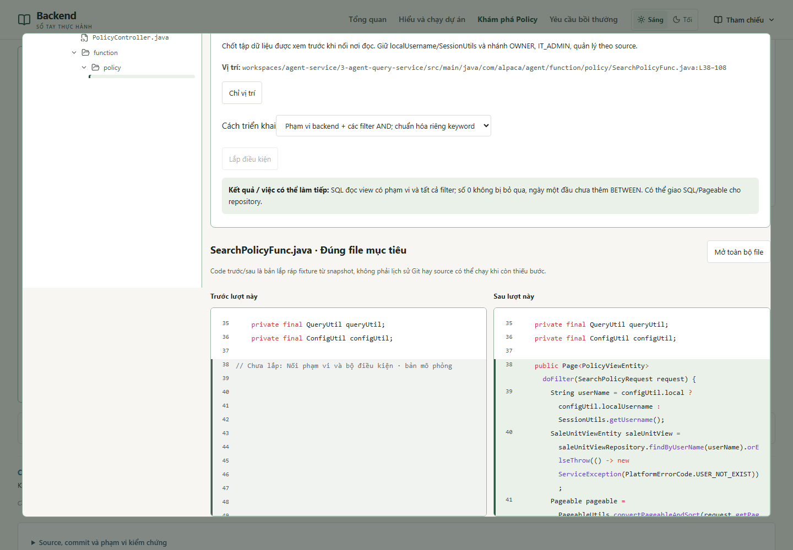

Danh sách dùng cùng cách học với Tạo mới
Bảy cặp ảnh ở cùng viewport 1440×1000, zoom 100%, deviceScaleFactor=1. Tạo mới dùng màn toàn cảnh hiện hành, checkpoint CreatePolicyFunc.exec:L61 và bước 2/6 · Kiểm tra Quote. Danh sách dùng bước 2/4 · Xác định hợp đồng được hiển thị.
Component dùng chung
| Phần | Component / quy tắc dùng cho cả hai bài |
|---|
| Toàn cảnh | LearningOverviewFrame · LearningJourneyDiagram: toolbar, drag/reset, đường học, chú giải và nút thực hành tại điểm vào. |
| Thực hành | LearningSteps · checkpointNavigation · CheckpointActionBar · CheckpointCodeWorkspace · SourceEditorColumns · PracticeTreePositions · CheckpointVariables · PracticeTools / PracticeSidePanel. |
| Lắp ráp | LearningAssemblyLesson: tiêu đề/bộ dữ liệu, quyết định, gợi ý, phản hồi, sơ đồ bàn giao và cột dữ liệu. LearningTechnicalReference giữ tra cứu thu gọn. |
| Khung và sơ đồ | LearningPatternWorkspace · LearningSources · AssemblySourceView: sao chép mẫu, A/B, excerpt/full file, cây workspace và hai chế độ cửa sổ. |
| Dữ liệu riêng | create-pattern-adapter và list-pattern-adapter; list-learning-data cung cấp câu hỏi, dòng dữ liệu, mẫu và các cặp source đã xác minh. Bài triển khai Danh sách được giới hạn theo bước đang học. |
Danh sách có bốn bước và các nhánh có kết quả/rỗng/catch. Tạo mới có sáu bước và các đường phát hành. Request Danh sách nhận JSON body; Tạo mới nhận quoteId trên path. Khác biệt nằm ở dữ liệu và thao tác nghiệp vụ; khung hiển thị và điều hướng dùng chung.
Nhìn toàn cảnh
Tạo mới · bản chuẩn Danh sách · component dùng chung, dữ liệu riêng
Danh sách · component dùng chung, dữ liệu riêng
Workspace checkpoint · bước 2
Tạo mới · bản chuẩn Danh sách · component dùng chung, dữ liệu riêng
Danh sách · component dùng chung, dữ liệu riêng
Suy luận · bước 2
Tạo mới · bản chuẩn Danh sách · component dùng chung, dữ liệu riêng
Danh sách · component dùng chung, dữ liệu riêng
Phối hợp · bước 2
Tạo mới · bản chuẩn Danh sách · component dùng chung, dữ liệu riêng
Danh sách · component dùng chung, dữ liệu riêng
Chọn mẫu · bước 2
Tạo mới · bản chuẩn Danh sách · component dùng chung, dữ liệu riêng
Danh sách · component dùng chung, dữ liệu riêng
Cửa sổ sơ đồ liên quan
Tạo mới · bản chuẩn Danh sách · component dùng chung, dữ liệu riêng
Danh sách · component dùng chung, dữ liệu riêng
Từng bước triển khai · bước 2
Tạo mới · bản chuẩn Danh sách · component dùng chung, dữ liệu riêng
Danh sách · component dùng chung, dữ liệu riêng
Source đầy đủ và request đổi trang
Ảnh mở được ở kích thước gốc. Bộ test kiểm tra thêm mobile 390×844, rỗng, lỗi, deep link, quay lại và việc giữ nguyên điểm dừng khi chuyển qua lắp ráp. Kết quả build/test và phạm vi xác minh ghi trong bàn giao.